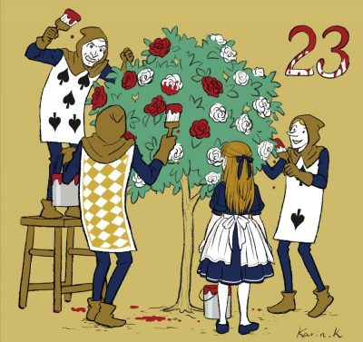
不思議の国のアリス」という題名は誰もが知っていると思いますが、うさぎやチェシャ猫が出てくるんだろう
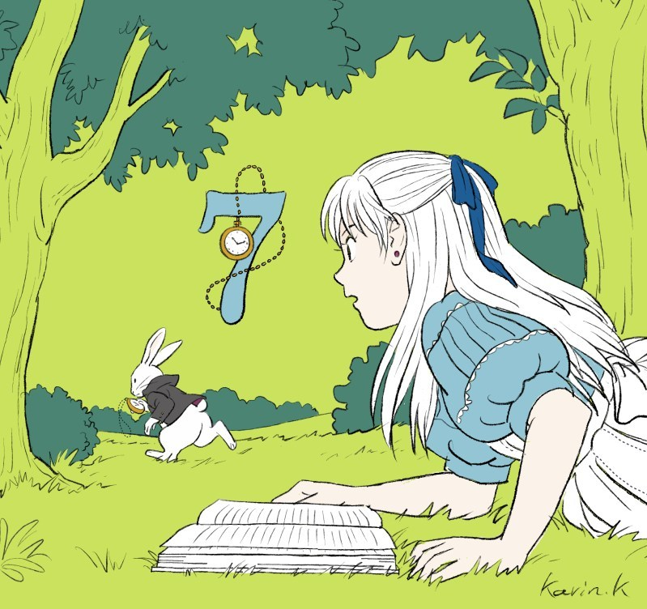 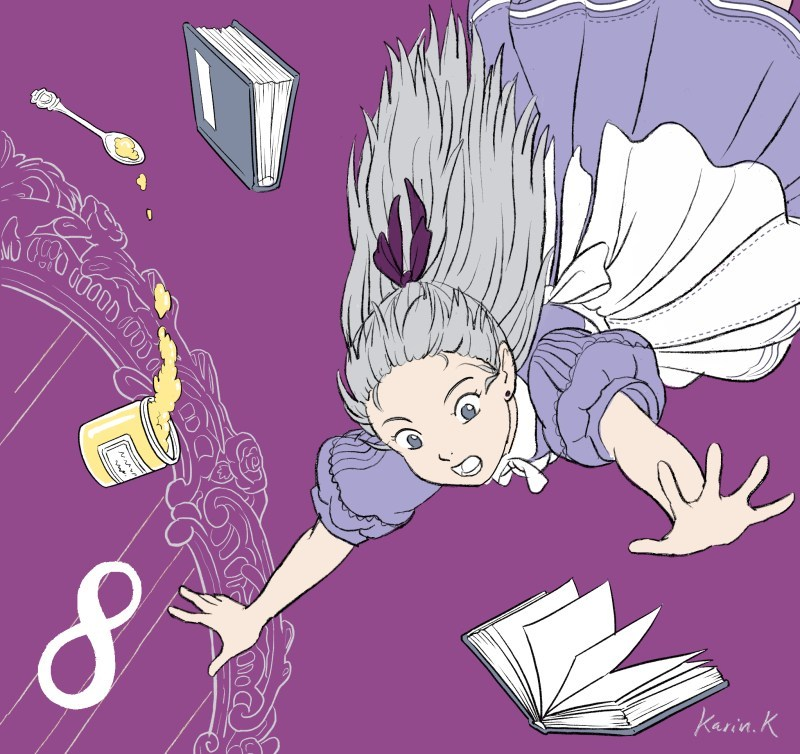
始まり
土手の上でおねえさんと本を読んでいたアリスは、
たいくつしてねむくなっていました。
すると、おどろいたことに
チョッキを着た白ウサギが
「たいへんだ、ちこくする！」
とさけびながら
走っていくのを見つけたのです。
アリスはすぐさまウサギのあとを追いかけました。
ウサギが飛びこんだ穴に
つづいてアリスも飛びこみます。
穴はとても深くてまっすぐで、
まわりには古い本だなや戸だながびっしり。
そんな中、アリスは地学のおさらいをしたり
猫のダイナのことを考えながら
どこまでも落ちていきます。
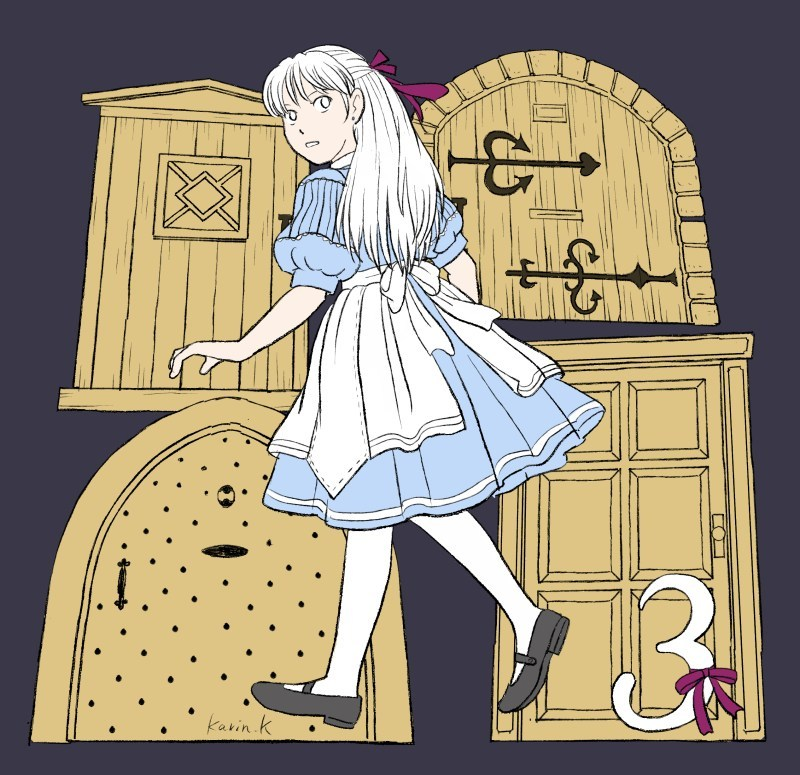 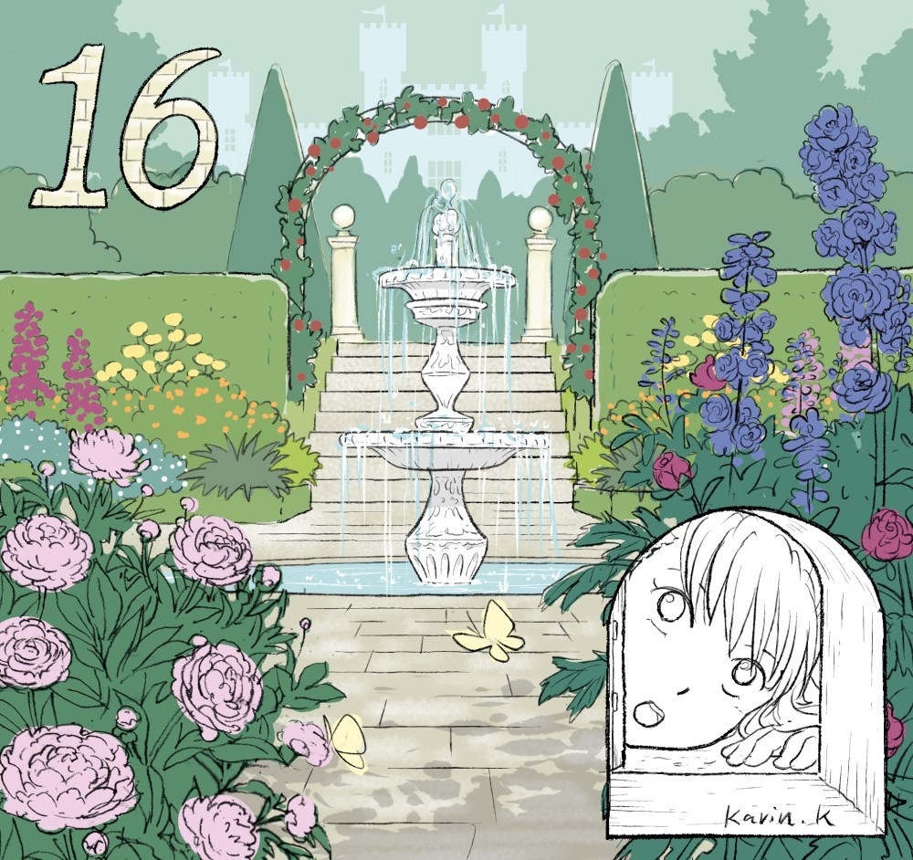
３
穴のそこでさらにウサギのあとを追いかけて、
広間にたどり着いたアリス。
そこにはカギのかかったドアがずらっとならんでいます。
アリスは小さなテーブルの上にカギを見つけて
一番小さなドアを開けてみました。
ドアの向こうには
あざやかな花がさききみだれる、
美しいお庭が見えました。
アリスはお庭に出たくてたまらないのですが、
ドアが小さくて通ることができません。
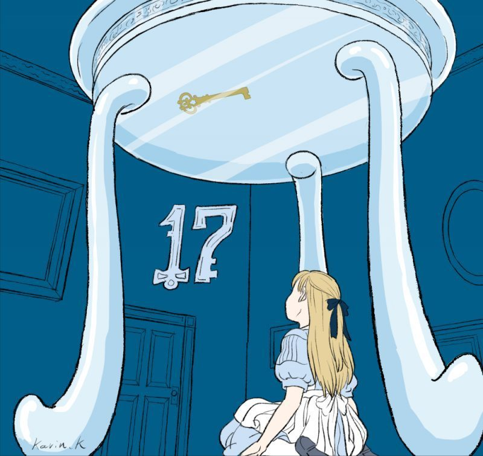 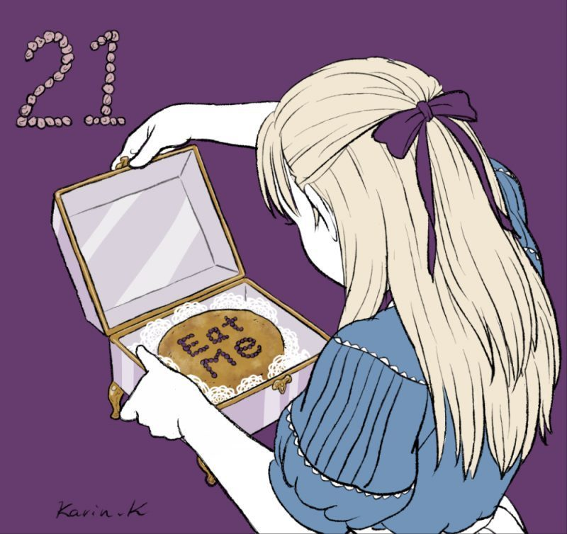
５
「わたしを飲んで」
と札がついた小びんを見つけ
それを飲みほすと
アリスの体はみるみる小さくなりました。
「これでお庭にでられるわ！」
ところが
ドアのカギをテープルの上に置いたままだったのです。
小さくなったアリスにはもう手がとどきません。
アリスは泣きだしました。
気をとりなおしてまわりを見わたすと、
こんどは小さなガラスのはこを見つけました。
中には
「わたしを食べて」
と書かれたケーキが。
思いきってそれを食べると・・・
アリスはこんどはびっくりするほど大きくなってしまいました。
それでやっぱりドアをとおることができません。
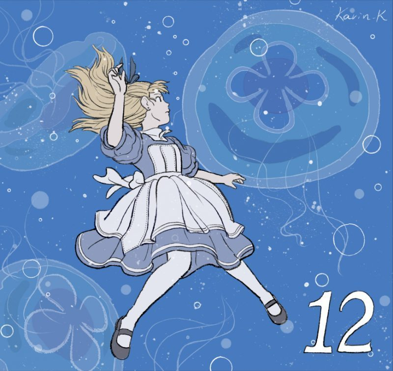 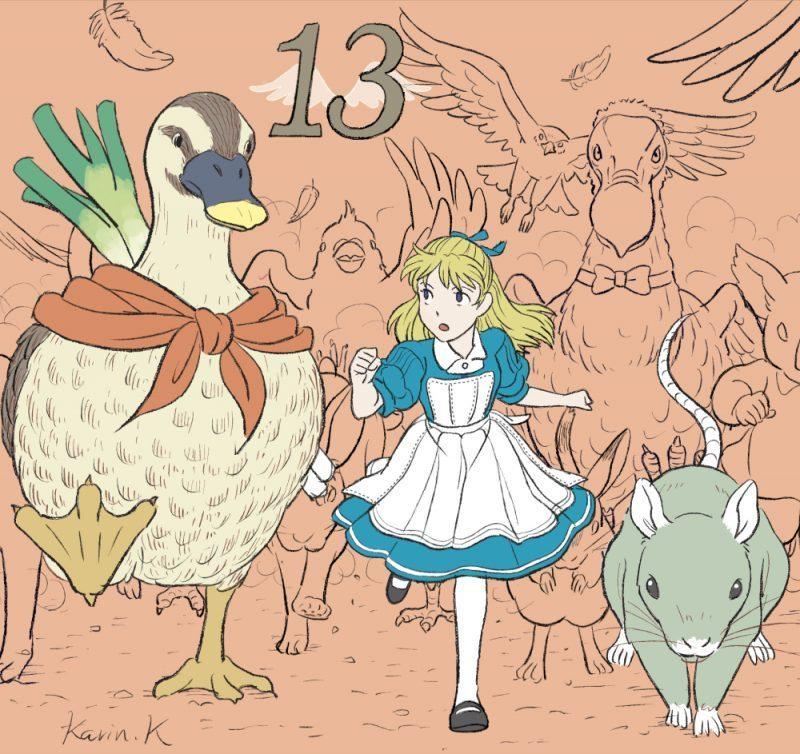
７
かなしくなってアリスが泣いていると、
さっきの白ウサギがもどってきました。
ウサギが落としていったせんすで自分をあおいでいたら、
またみるみる小さくなって
なんとアリスは
自分のなみだでできた池に落っこちてしまいました。
なみだの池でおぼれていたネズミや
いろんな動物たちといっしょに、
陸にあがったアリス。
ぬれた体をかわかすために、
ドードー鳥のていあんで、
かけっこをすることになりました。
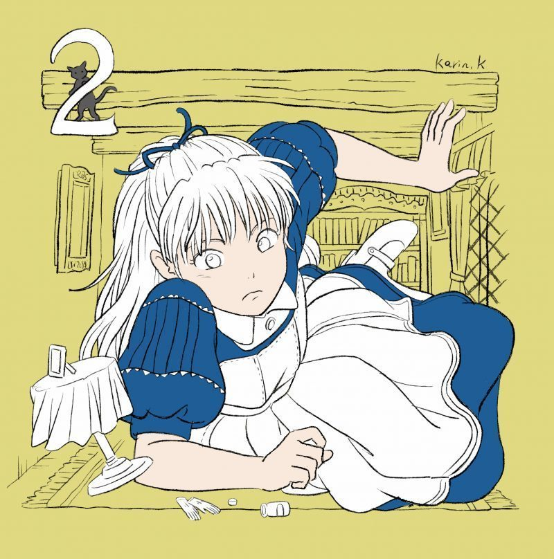 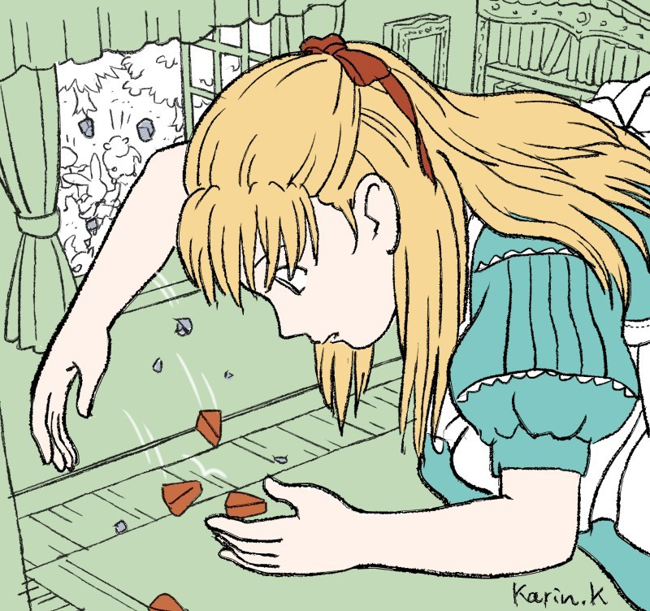
９
うっかり猫のダイナのじまん話をしたので
ネズミ達はこわがってにげ出してしまいました。
そこへまたウサギが
落としものを探しにやってきました。
ウサギはアリスを召し使いとまちがえて、
自宅に忘れ物を取りに行くよう命令します。
ウサギの家で、
また飲み物を飲んで大きくなったアリスは
つっかえて家から出られなくなってしまいました。。
もどってきたウサギが、使用人たちにめいれいして
アリスを追いだそうとしますが、
巨大なアリスにはかないっこありません。
窓から投げこまれた小石がケーキに姿を変え、
それを食べるとアリスの体はまた小さくなったので、
いそいでウサギの家を逃げだしました。
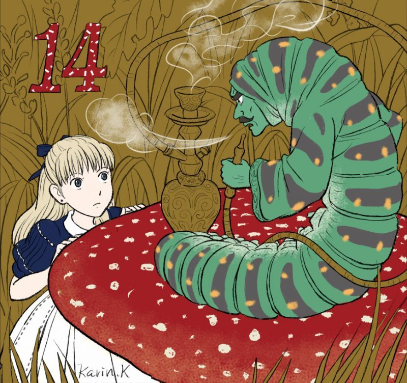 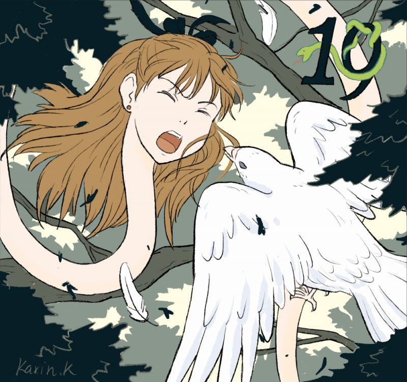
１１
「あのお庭に出るにはまた大きくならなくちゃ。
どうしたらいいかしら」
そう考えながら草むらを歩いていたアリスは、
大きなキノコの上で水キセルをふかす
青虫に出会いました。
青虫にヒントをもらって
キノコをかじったアリスは、
今度はにょきにょきと首がのびて
森のはるか上空にまで頭が飛びだしてしまいます。
まるでヘビみたい！
ハトに卵をねらっているとかんちがいされて
はげしく攻撃されました。